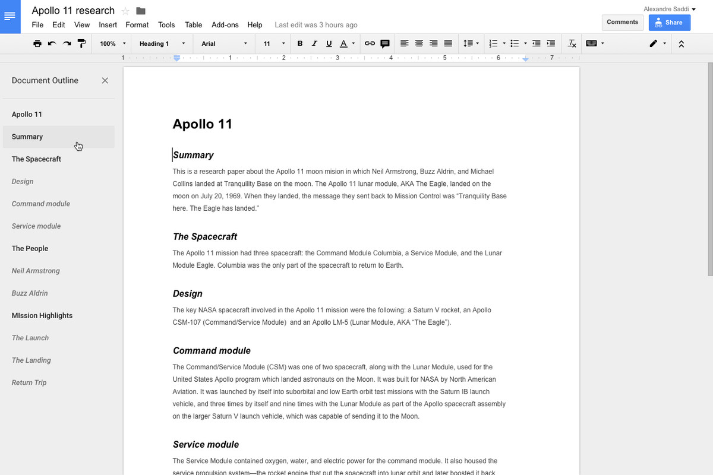

6. Ahoy¶
Captain Marvel is an upcoming American superhero film based on the Marvel Comics character Carol Danvers. Produced by Marvel Studios and distributed by Walt Disney Studios Motion Pictures, it is set to be the twenty-first film in the Marvel Cinematic Universe (MCU).
The film is written and directed by Anna Boden and Ryan Fleck, with Geneva Robertson-Dworet and Jac Schaeffer also contributing to the screenplay. Brie Larson stars as Danvers, alongside Samuel L. Jackson, Ben Mendelsohn, Djimon Hounsou, Lee Pace, Lashana Lynch, Gemma Chan, Annette Bening, Clark Gregg, and Jude Law. Set in 1995, the story follows Danvers as she becomes Captain Marvel after the Earth is caught in the center of a galactic conflict between two alien worlds.
Заказ (ORDER) [f-[f-[f-[f штрихкод продукта, его описание, заказанное количество, цену и прочую необходимую информацию. Here’s a grid table followed by a simple table:
| Header row, column 1 (Captain) |
|
|
|
|---|---|---|---|
| body row 1, column 1 | column 2 | column 3 | column 4 |
| body row 2 | Cells may span columns. | ||
| body row 3 | Cells may span rows. |
|
|
| body row 4 | |||
| body row 5 | Cells may also be
empty: --> |
||